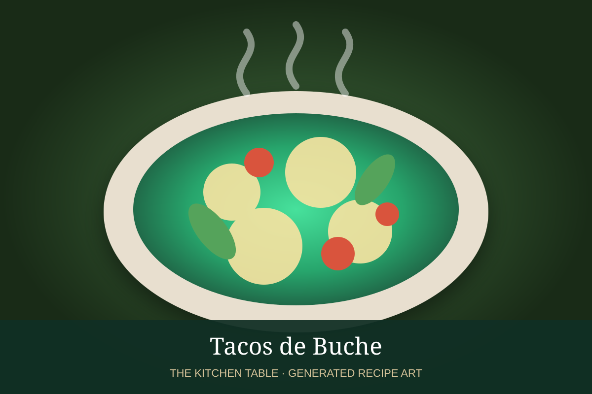

← Back to all recipes
PORK · MEXICAN
Tacos de Buche
Tender pork stomach simmered with aromatics, then chopped and crisped for taquería-style tacos.
2 hr 30 minMakes 12 tacos

Photo: Wikimedia Commons
Ingredients
- 2 lb cleaned pork stomach
- 1/2 white onion
- 4 garlic cloves
- 2 bay leaves
- 1 tsp oregano
- 1 tbsp kosher salt
- 1 tbsp oil
- 12 tortillas
- Onion, cilantro, radish, lime, salsa
Preparation
- Rinse pork stomach thoroughly.
- Simmer with onion, garlic, bay, oregano, and salt until very tender.
- Drain and cool slightly.
- Chop finely and crisp on a hot griddle.
- Serve in tortillas with onion, cilantro, radish, lime, and salsa.